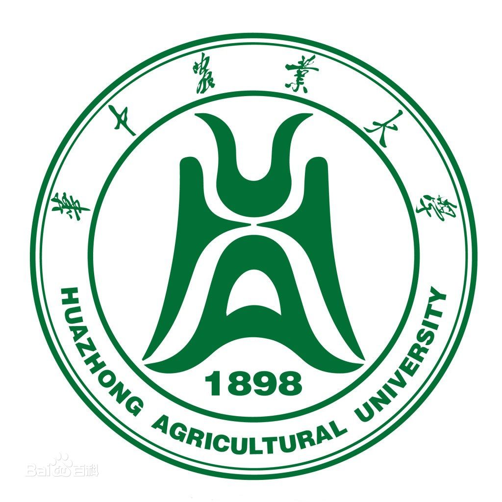

学校简介

华中农业大学（Huazhong Agricultural University），简称“华农”，坐落于湖北省武汉市南湖狮子山脚，是中国教育部直属的一所以生命科学为特色，农、理、工、文、法、经、 管协调发展的全国重点大学，国家首批世界一流大学和一流学科高校、211工程、985工程优势学科创新平台重点建设院校，入选高等学校学科创新引智计划、卓越工程师教育培养计划、卓越 农林人才教育培养计划、首批高等学校科技成果转化和技术转移基地，为武汉七校联合办学成员。
华中农业大学办学源头溯源于1898年清朝光绪年间湖广总督张之洞奏请清政府创办的湖北农务学堂，是中国高等农业教育起点之一，历经传承演变，1952年由武汉大学农学院、湖北农学院全 部系科以及原中山大学等6所综合性大学农学院的部分系科组建成立华中农学院，1985年更名为华中农业大学。 [1] 根据2019年1月学校官网信息显示，学校占地面积495万平方米（7425亩），有学院（部）18个，本科专业60个，一级学科硕士点27个，二级学科硕士点102个，硕士专业学位授权类别10个， 一级学科博士点15个，二级学科博士点65个，博士专业学位授权类别1个，博士后科研流动站13个；有教职工2657人，全日制在校学生26196人，其中本科生18763人，研究生7433人。